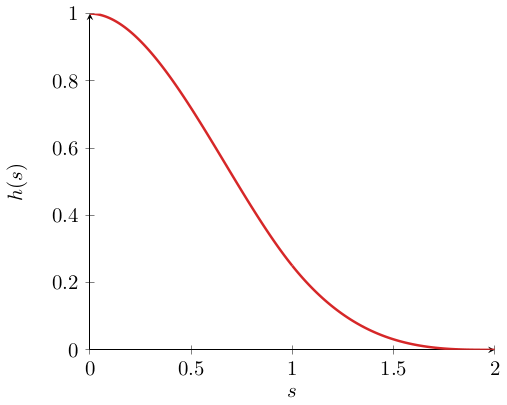

The Linear Wave Equation
The linear wave equation is the prototypical example for a Hamiltonian PDE. It is given by (see (Buchfink et al, 2023) and (Peng and Mohseni, 2016)):
\[\mathcal{H}(q, p; \mu) := \frac{1}{2}\int_\Omega\mu^2(\partial_\xi{}q(t,\xi;\mu))^2 + p(t,\xi;\mu)^2d\xi,\]
with $\xi\in\Omega:=(-1/2,1/2)$ and $\mu\in\mathbb{P}:=[5/12,5/6]$ as a possible choice for domain and parameters.
The PDE for to this Hamiltonian can be obtained similarly as in the ODE case:
\[\partial_t{}q(t,\xi;\mu) = \frac{\delta{}\mathcal{H}}{\delta{}p} = p(t,\xi;\mu), \quad \partial_t{}p(t,\xi;\mu) = -\frac{\delta{}\mathcal{H}}{\delta{}q} = \mu^2\partial_{\xi{}\xi}q(t,\xi;\mu).\]
As with any other PDE, the wave equation can also be discretized to obtain a ODE which can be solved numerically.
If we discretize $\mathcal{H}$ directly, to obtain a Hamiltonian on a finite-dimensional vector space $\mathbb{R}^{2N}$, we get a Hamiltonian ODE[1]:
\[\mathcal{H}_h(z) = \sum_{i=1}^{\tilde{N}}\frac{\Delta{}x}{2}\bigg[p_i^2 + \mu^2\frac{(q_i - q_{i-1})^2 + (q_{i+1} - q_i)^2}{2\Delta{}x^2}\bigg] = \frac{\Delta{}x}{2}p^Tp + q^TKq,\]
where the matrix $K$ contains elements of the form:
\[k_{ij} = \begin{cases} \frac{\mu^2}{4\Delta{}x} &\text{if $(i,j)\in\{(0,0),(\tilde{N}+1,\tilde{N}+1)\}$ }, \\ -\frac{\mu^2}{2\Delta{}x} & \text{if $(i,j)=(1,0)$ or $(i,j)=(\tilde{N},\tilde{N}+1)$} \\ \frac{3\mu^2}{4\Delta{}x} & \text{if $(i,j)\in\{(1,1),(\tilde{N},\tilde{N})\}$} \\ \frac{\mu^2}{\Delta{}x} & \text{if $i=j$ and $i\in\{2,\ldots,(\tilde{N}-2)\}$} \\ -\frac{\mu^2}{2\Delta{}x} & \text{if $|i-j|=1$ and $i,j\notin\{0,\tilde{N}+1\}$} \\ 0 & \text{else}. \end{cases}\]
The vector field of the FOM is described by (see for example (Peng and Mohseni, 2016)):
\[ \frac{dz}{dt} = \mathbb{J}_d\nabla_z\mathcal{H}_h = \mathbb{J}_d\begin{bmatrix}\Delta{}x\mathbb{I} & \mathbb{O} \\ \mathbb{O} & K + K^T\end{bmatrix}z, \quad \mathbb{J}_d = \frac{\mathbb{J}_{2N}}{\Delta{}x}.\]
The wave equation has a slowely-decaying Kolmogorov $n$-width (see e.g. Greif and Urban, 2019), which means linear methods like PSD will perform poorly.
Using the Linear Wave Equation in Numerical Experiments
In order to use the linear wave equation in numerical experiments we have to pick suitable initial conditions. For this, consider the third-order spline:
\[h(s) = \begin{cases} 1 - \frac{3}{2}s^2 + \frac{3}{4}s^3 & \text{if } 0 \leq s \leq 1 \\ \frac{1}{4}(2 - s)^3 & \text{if } 1 < s \leq 2 \\ 0 & \text{else.} \end{cases}\]
Plotted on the relevant domain it looks like this:

Taking the above function $h(s)$ as a starting point, the initial conditions for the linear wave equations will now be constructed under the following considerations:
- the initial condition (i.e. the shape of the wave) should depend on the parameter of the vector field, i.e. $u_0(\mu)(\omega) = h(s(\omega, \mu))$.
- the solutions of the linear wave equation will travel with speed $\mu$, and we should make sure that the wave does not touch the right boundary of the domain, i.e. 0.5. So the peak should be sharper for higher values of $\mu$ as the wave will travel faster.
- the wave should start at the left boundary of the domain, i.e. at point 0.5, so to cover it as much as possible.
Based on this we end up with the following choice of parametrized initial conditions:
\[u_0(\mu)(\omega) = h(s(\omega, \mu)), \quad s(\omega, \mu) = 20 \mu |\omega + \frac{\mu}{2}|.\]
References
- Buchfink, Patrick, Silke Glas, and Bernard Haasdonk. "Symplectic model reduction of Hamiltonian systems on nonlinear manifolds and approximation with weakly symplectic autoencoder." SIAM Journal on Scientific Computing 45.2 (2023): A289-A311.
- Peng, Liqian, and Kamran Mohseni. "Symplectic model reduction of Hamiltonian systems." SIAM Journal on Scientific Computing 38.1 (2016): A1-A27.
- Greif C, Urban K. Decay of the Kolmogorov N-width for wave problems[J]. Applied Mathematics Letters, 2019, 96: 216-222.
- 1This conserves the Hamiltonian structure of the system.